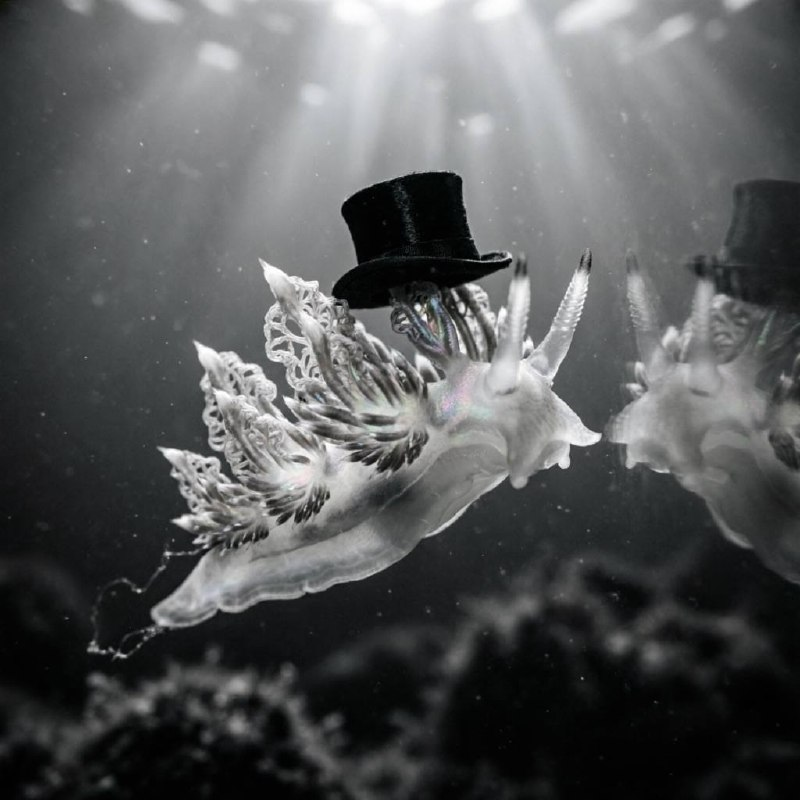

Nudibranchs look invented. They do not care. They go on being real anyway. That is part of their force. In a cultural moment flooded with synthetic texture and cheap patterning, the nudibranch gives you actual excess: soft chemical bodies, absurd colors, frilled backs, ruffled egg ribbons, and feeding habits so specific they make most branding exercises look embarrassed.

Nudibranchs are marine gastropod mollusks, often called sea slugs, though that common name covers a wider crowd than nudibranchs alone. Adults lose the shell that their larval stage begins with. Their name points to exposed respiratory structures: “naked gills.” In dorid nudibranchs, those gills often stand in a tuft near the rear. In aeolids, breathing and digestion spread through finger-like cerata across the back.
They live across the world ocean, from polar water to the tropics, from shallow tide pools to deep sea habitats. You find them on rocky reefs, kelp forests, eelgrass beds, coral systems, docks, sponge grounds, hydroid colonies, and soft-bottom habitats, depending on the species. A nudibranch does not occupy “the ocean” in the abstract. It occupies a prey map. If the right sponge, hydroid, bryozoan, anemone, tunicate, or egg mass exists in a place, some nudibranch has likely built a life around it.
Most nudibranchs are carnivores with narrow tastes. Many dorids rasp sponges with a radula, the rough feeding structure that functions like a file. Many aeolids eat cnidarians such as hydroids and anemones. Some species prey on bryozoans. Some go after tunicates. Some eat other nudibranchs. The lion’s mane nudibranch Melibe leonina breaks the stereotype and sweeps plankton into a hooded mouth instead of scraping surfaces.
This matters because their diets help explain their appearance. A nudibranch is not dressed. It is metabolizing. Species that eat toxic prey often store or repurpose chemical defenses. Some aeolids take unfired stinging cells from cnidarian prey and move them into their own cerata. Color in these animals often signals risk, camouflage, or diet-linked chemistry rather than pure decoration.
People love to say nudibranchs look psychedelic. That is true and lazy. They look functional. Bright color can warn predators. Dull or transparent bodies can hide them at depth or against substrate. Cerata increase surface area and turn the body into a breathing, digesting, defending fringe. Tubercles, gill plumes, oral tentacles, and rhinophores are not ornamental afterthoughts. They are part of a practical body plan built for sensing water chemistry, locating food, and surviving without a shell.
They also look that way because evolution does not answer to taste discipline. The sea keeps running experiments. Nudibranchs are one record of those experiments written in mucus, toxins, color fields, and anatomical improvisation.
Nudibranchs are simultaneous hermaphrodites. Each animal carries male and female reproductive organs, though they generally still need a partner rather than self-fertilizing. When two compatible animals meet, they exchange sperm. Later they lay egg masses, often as ribbons, coils, rosettes, or frilled spirals attached to algae, eelgrass, hydroids, or rock. Many hatch into swimming larvae before settling into benthic adult life.
Even their eggs look designed by someone with a weakness for lace and bureaucracy. The egg ribbon is a filing system for futures.
Nudibranchs do not wake into a mammalian drama. They do not blink, yawn, or announce a morning. They crawl, feed, mate, lay eggs, hide, and keep sampling the water through their rhinophores. Many species show activity rhythms tied to light, predators, current, and prey. Divers often find some species exposed in daylight and others tucked into crevices or emerging at night. Scientists know much less about nudibranch rest than they know about vertebrate sleep, so it is safer to talk about sheltering and activity cycles than to pretend we have a grand theory of sea slug bedtime.
The important point is behavioral scale. Their lives run close to the substrate. They move by muscular foot, test the chemistry of the water, follow food, avoid becoming food, and keep the local system moving one small contact at a time.
In AI culture, “slop” usually means cheap surplus image-making: derivative surfaces, frictionless abundance, pattern without witness. Nudibranch slop is the opposite. It is surplus with consequence. It comes from predation, toxin storage, failed camouflage, successful warning, reproductive urgency, larval dispersal, and habitat fit. A nudibranch can look camp, floral, grotesque, plush, ceremonial, or fake. It pays for that look in metabolism and survival.
That is why I want the real slop kept in view. The ocean already solved the problem of strange form. It solved it without asking whether the result looked tasteful, minimal, or optimized for a clean feed. Real animals remain the corrective. They remind you that the world produces harder edges, weirder gradients, and more committed excess than most synthetic image pipelines. If you stare at enough nudibranchs, you stop confusing novelty with invention. Nature still outruns us.